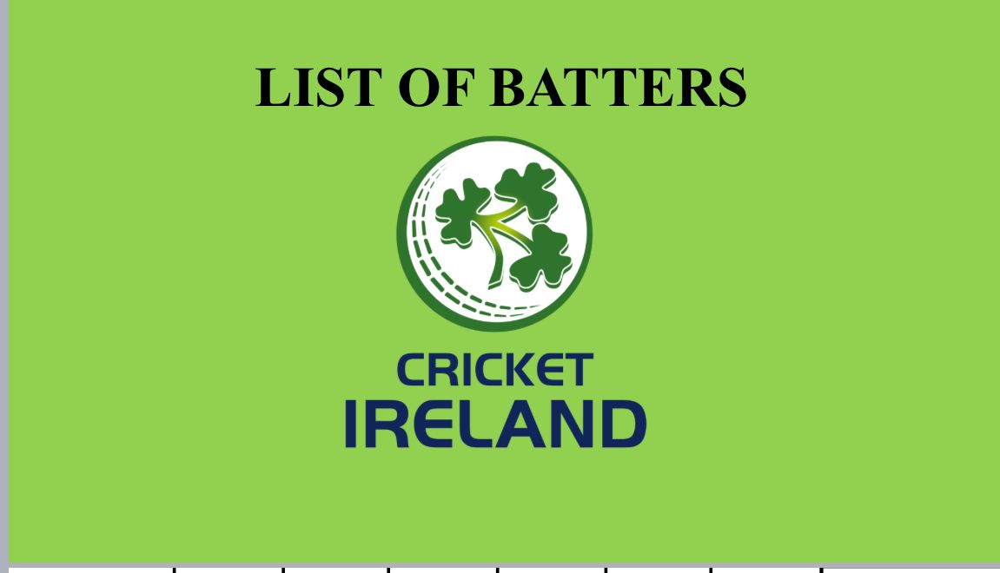
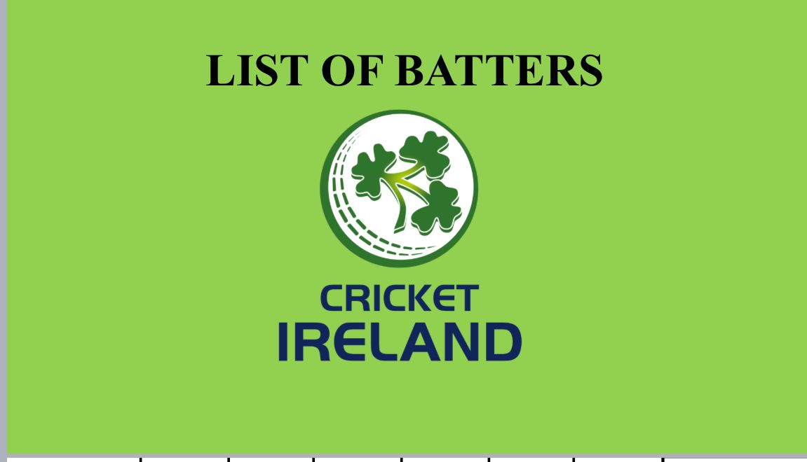

PROJECTS
SEASON PLAYER REVIEWS: NOTTINGHAMSHIRE COUNTY CRICKET CLUB (confidential)
SITUATION:
Reviewed season performances and supported stakeholder decisions on player contract renewals.
TASK:
Collaborated with NCCC analysts Kunal Manek and Holly Armitage to create interactive, automated statistical dashboards on Tableau for First and Second XI teams (red and white ball).
APPROACH:
Understood the club's objectives and KPIs, familiarised with analysis models, and managed Play Cricket Scorer Pro data. Integrated pcs data into performance metrics to track player progress over time.
RESULT:
Provided impactful cricket analysis, highlighting strengths and improvement areas to elite contracted players at NCCC. Proven ability to excel as a team player in a high-pressure sports environment.
WORKING WITH INTERNATIONAL TEAMS: DENMARK AND ITALY
SITUATION:
Collaborated with Intelligent Cricket to provide data-driven analysis to Denmark and Italy Cricket Teams' Head Coaches for shaping game strategies in the ICC World Cup 2023 qualifiers.
TASK:
Data Interpretation, Visualisation and Data Presentation
APPROACH:
Broke down matches into segments to gain detailed insights into scoring and defending patterns. Identified key metrics contributing to success and areas needing improvement. Prioritised individual matchups for Ireland and Scotland players, studying player behaviors through data and vulnerabilities against specific bowling styles.
RESULT:
Uncovered dismissal trends and vulnerabilities, such as Paul Stirling's weakness against ROB, dismissed once every ten balls. Developed a match-up matrix to strategise containment when unable to dismiss a batter.
Click here for document 
Click here for document 

Individual Player Analysis: CDM
TASK:
Adhering to Andrea Pirlo's philosophy, collected data and videos, focusing on fundamental principles such as perception, positioning, body orientation, technique, and execution. Utilised XY data overlay on graphics for player positions and event locations.
APPROACH:
Focused on key performance indicators (KPIs) for CDMs, analysing their behavior (Good/Bad) in various game situations. Led analysis meetings based on individual learning plans, tailoring reports to player knowledge levels.
RESULT:
Highlighted the significance of mastering football basics, showcasing their impact on decision-making and execution. Provided insights on when to perform head checks, maintain the right body orientation, and take forward touches. Adapted analysis delivery for different age groups, promoting discussions in group sessions and personalised feedback in 1:1 sessions.
POST-MATCH ANALYSIS: HIBERNIAN FC
TASK:
Notational analysis on Nacsport, football tactical understanding, video analysis, and presentation tools like PowerPoint/Keynote.
APPROACH:
Designed a coding panel to break down complex information into simple inputs, enabling efficient data collection. Rather than solely documenting actions, I provided the strategic and tactical motivations behind them, emphasising the "why" behind the actions. Incorporated Klipdraw annotations and graphical elements to the footage for player runs or actions like forward runs, backline shape, and position.
RESULT:
This analysis provided actionable insights, shedding light on weaknesses in defensive strategy and areas for improvement. Revealed issues with Winger and Fullback marking that allowed the opposition to penetrate half-spaces, resulting in the opposition forward finding space in the center.

MCGRATH V ATHERTON (ONLY DISMISSALS)
TASK:
Utilised Nacsport and Ludimos (AI) analysis software for data collection and video analysis.
APPROACH:
Collected technical and tactical data points, including shot type, shot intent, stance, shuffle location, and more. Identified patterns/trends by asking the right questions: What is Happening? Why is it Happening? Discussed recurring technical flaws of Atherton's batting exploited by McGrath.
RESULT:
Balanced technical and tactical insights. Analysis showed that 79% of dismissals resulted from in-swinging deliveries. Balls pitched at good length, and the 4th/5th line of delivery yielded the most wickets (53%). Video analysis revealed technical reasons, including trigger movement across the OFF-STUMP (79% occurrences) and misaligned front shoulder and head position led to edges (16 out of 19 dismissals).
PLAYER REPORT: AXAR PATEL
SITUATION:
A comprehensive evaluation of strengths and weaknesses in IPL
TASK:
Utilised Tableau for KPI identification and data visualisation.
APPROACH:
Analysed various bowling metrics, including impact wickets, BRO, DBO, and runs per ball. Benchmarked performances with other spinners/allrounders in the IPL. Created dynamic visualisations in Tableau.
RESULT:
Provided valuable insights for player selection and recruitment decisions. Looked for the right things in the data. Uncovered when to attack, with whom to attack, and how to attack Axar Patel in phases of play analysis. Identified vulnerabilities in Axar Patel's performance against left-handed batters. Highlighted the advantage of top-order batters in scoring faster. Noted that Axar Patel concedes 11% more fours than the average at the death overs.

RECRUITMENT ANALYSIS: SRH
SITUATION:
Recruited a suitable death batter for Sunrisers Hyderabad.
TASK:
Implemented a systematic approach to player profiling and recruitment. Introduced the Batter Threat Weighting (BTW) metric for player evaluation and comparing player abilities and roles. Assigned points based on performance relative to their competitors.
APPROACH:
Provided evidence to the team's needs by identifying the holes at finishing the innings. Considered contextual factors such as the team's playing philosophy, auction strategy, current batting line-up, team balance, and home conditions. Created Tableau dashboards for player comparisons using KPIs.
RESULT:
Selected David Miller based on the highest BTW score, ensuring alignment with the team's strategy and performance goals.
WORLD CUP ANALYSIS: FUTSAL 2021
SITUATION:
Investigated critical areas for England FUTSAL, especially playing styles and set pieces.
TASK:
Demonstrated strategic thinking by creating an analysis code window in Nacsport. Developed alternative solutions to solve the problem of collecting data on playing styles. Maintained a game library by organising all the match videos, clips, and data matrices.
APPROACH:
Started by understanding user requirements and effectively communicated findings to coaching staff In a short and effective manner rather than overloading them with information.
RESULT:
Discovered set-pieces' potential for increasing goal-scoring chances by 37%. Emphasised the effectiveness of transitions in creating goal-scoring opportunities from the middle third, suggesting that having an aggressive strategy to win possession in the mid-field can be highly successful. Contributed to England Futsal U19's strategic

EXCEL DASHBOARD: CHELTENHAM TOWN FIRST TEAM
TASK:
Data Monitoring, Benchmarking, Data Analysis, Dashboard Creation.
APPROACH:
Monitored the first team’s performances in attack/defense and compared points scored with the other EFL-1 clubs using filters, slicers, and lookup functions.
RESULT:
The visual dashboard facilitated the quick identification of strengths and weaknesses, aiding data-driven pre-match strategies. Comparison with other EFL-1 Clubs highlighted league-wide performance trends and improvement areas. Enhanced communication and collaboration with coaching staff for efficient teamwork and relationships.